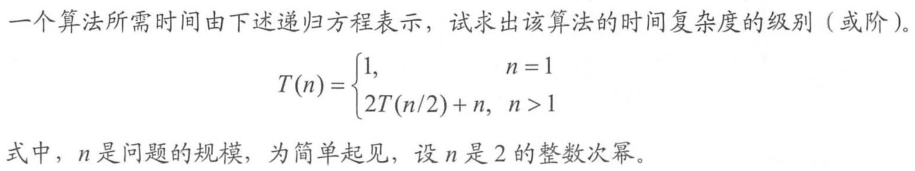
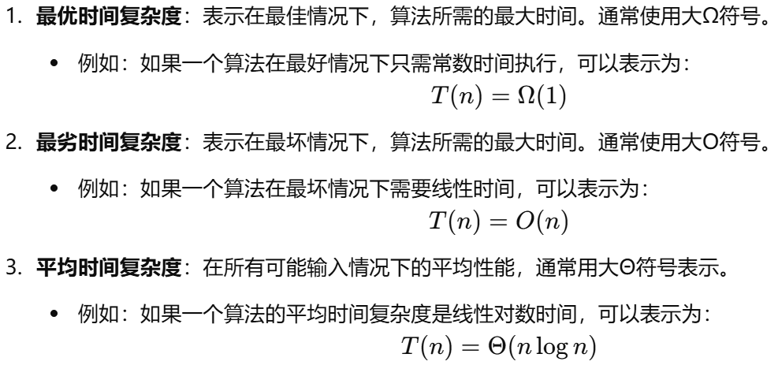

学习主定理
之前很早就听机房的学长说主定理了，是用于算法竞赛中分析时间复杂度的，但是一直没有学习过
今天做DS，又遇到了，题目如下
一道考研题目

解析：时间复杂度为 $O(nlogn)$
设 $n=2^k(k\geq0)$，有 $T(2^k)=2T(2^{k-1})+2^k=2^2T(2^{k-2})+2*2^k$
由此得到递推公式 $T(2^k)=2^iT(2^{k-i})+i*2^k$
故 $T(2^k)=2^kT(2^0)+k*2^k=(k+1)2^k$
带回 $n$ 得到 $T(n)=(logn+1)2^{logn}$ 即时间复杂度为 $O(nlogn)$
这也就是归并排序(MergeSort)的时间复杂度
更普适的
假设有递推关系式 $T(n)=aT(\frac{n}{b})+f(n)$，其中$a\ge1,b>1$
其中，$n$ 为问题规模，$a$ 为递归的子问题数量，$\frac{n}{b}$ 为每个子问题的规模（假设每个子问题的规模基本一样），$f(n)$ 为递归以外进行的计算工作
结论：
- 若存在$\varepsilon>0$，$f(n)=O(n^{log_b(a)−\varepsilon})$（可不严谨的视作多项式地小于），那么$T(n)=\Theta(n^{log_ba})$
- 若存在$\varepsilon>0$，$f(n)=\Theta(n^{log_ba}log^\varepsilon n)$，那么$T(n)=O(n^{log_ba}log^\varepsilon n)$
- 若存在$\varepsilon>0$，$f(n)=Ω(n^{log_b(a)+\varepsilon})$（多项式地大于），同时存在常数 $c<1$以及充分大的$n$，满足$af(\frac{n}{b})≤cf(n)$，则$T(n)=\Theta(f(n))$
符号说明：

更普适的:

更本质的:
使用 $T(n)=2T(\frac{n}{2})+n$ 为例
1 | f(n) |
这里用$O(1)$准确的说是$\Theta(1)$
主定理到底在做什么？事实上主定理就是对比这两个部分的时间复杂度罢了
到底是上面那些f(n)操作加起来更耗时, 还是最下层所有叶节点的O(1)加起来更耗时?
即对于 $T(n)=pf(n)+kO(1)$，$p$ 我们认为它是常数，重点是 $k$，大致数值为 $n^{log_ba}$
代换一下，得到 $T(n)=pf(n)+n^{log_ba}$，显然这是在对比两项
对于三种情况：
下层所有叶节点的
O(1)加起来更耗时$k$（即 $n^{log_ba}$）的增长速度大于了 $f(n)$, 那么 $T(n)=O(nlogba)$
之所以引入 $\varepsilon$ 只是为了说明增长速度大
第一种情况下 $k$ 代表的最终处理问题的最小子任务明显占了主导
一样耗时
最小子任务和分割过程一样，没有谁明显的占据了主导低位，因此两个的时间复杂度都得算进去 $T(n)=O(n^{log_ba}⋅logn)$
上面那些
f(n)操作加起来更耗时分治过程占了主导地位，同时这种情况下限制了 $p$ 不会无法被认为是常数
常见形式
例题
- NOIP2016TGT14
根据主定理，此时
符合格式 $f(n)=O(n^{log_ba}log^kn)$(2)，此时 $k=0$
所以 $T(n)=Θ(n^{log_ba}log^{k+1}n)=Θ(n^\frac{1}{2}log^1n)=Θ(\sqrt nlogn)$
选择C
- $T(n)=9T(\frac{n}{3})+n$
根据主定理，此时
符合格式 $f(n)=O(n^{log_b(a)-\varepsilon})$(1)，此时 $\varepsilon=1$
所以 $f(n)=O(n^{log_ba})=O(n^2)$
- $T(n)=2T(\frac{n}{2})+2n$
根据主定理，此时
符合格式 $f(n)=O(n^{log_ba}log^kn)$(2)，此时 $k=0$
所以 $T(n)=Θ(n^{log_ba}log^{k+1}n)=Θ(n^1log^1n)=Θ(nlogn)$
- $T(n)=2T(\frac{n}{4})+n^2$
根据主定理，此时
符合格式 $f(n)=O(n^{log_b(a)+\varepsilon})$(3)，此时 $\varepsilon=\frac{3}{2}$
同时存在常数 $c<1$以及充分大的$n$，满足$af(\frac{n}{b})≤cf(n)$
所以 $T(n)=Θ(f(n))=O(n^2)$
小结
主定理讨论的是对于公式 $T(n)=pf(n)+kO(1)$ 里 p f(n) k 三个变量的增长速度。只不过主定理直接用条件限制了p，所以我们关注的重点就仅在 f(n) 和 k 上了
reference
https://zh.wikipedia.org/wiki/%E4%B8%BB%E5%AE%9A%E7%90%86
https://blog.restkhz.com/post/how-master-theorem-works
https://blog.csdn.net/lanchunhui/article/details/52451362
https://www.luogu.com.cn/article/w3avh1ku
.gif)
.gif)
.gif)
.gif)
.gif)
.gif)
.gif)
.gif)
.gif)
.gif)
.gif)